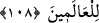
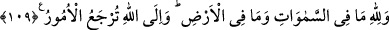

107. Yüzleri ağaranlara gelince, onlar Allah’ın rahmeti içindedirler; orada ebedî
kalacaklardır.
“Rahmet”ten maksat, cennet ve ebedî olarak istifade edilecek nîmetlerdir. Bunlara
rahmet denmesinin sebebi, bir mü’min bütün hayatını ibadât ve tâat ile geçirse bile yine
de Allah’ın rahmeti olmadan cennete giremeyeceğine dikkat çekmektir.
“Orada sürekli kalacaklardır.” Sanki “orada nasıl kalacaklar?” diye bir soru
soruluyor. Cevâben “orada sürekli kalacaklar, ne ölecekler, ne de başka bir yere
gideceklerdir.” deniliyor.
108. İşte bunlar, Allah’ın, sana hak olarak okuduğumuz âyetleridir. Allah hiç bir
kimseye haksızlık etmek istemez.
“İşte onlar” ifadesi; iyileri nimetlendirme, kâfirleri de azaba dûçâr etme konularına
da şâmil olan âyetlere işaret etmektedir. “Allah’ın âyetleridir.” Yâ Muhammed!
Cebrâil vasıtasıyla onları sana okuyoruz. Bu âyetleri hak ile okuyoruz, ya da “hiçbir
hükümde iyi davrananların sevabını eksiltmek, kötü davrananın cezasını artırmak yahut
günahsız olarak cezalandırmak gibi bir zulüm şâibesi taşımayan bilakis yaptığı vâd ve
tehditler gereği herkesin amelinin karşılığı eksiksiz olarak verilen hak ve adâletle dolu
olan âyetleri okuyoruz.” demektir.
“Allah, âlemlere”; hiçbir yaratığına, çok az bile olsa “zulmetmek istemez.” Nasıl
zulmetsin ki, zulüm başkasının mülkünde tasarrufta bulunmaktır. Oysa Allah Teâlâ,
kendi mülkünde tasarrufta bulunmuş olacaktır. Yahut zulüm bir şeyi olması gereken
yerin dışında bir yere koymaktır. Bu da bazen, hak kazanmış birine hakkını vermemekle
olur, bazen de yapmaması gerektiği halde yasaklanmış bir şeyi yapması ile olur.
Bunların hiçbiri Cenâb-ı Hak için düşünülemez ki O’nun zulmetmesi mümkün olsun.
Çünkü, hiç kimsenin hiçbir hakkı yoktur ki Allah bunu vermediği için zulmetmiş olsun.
Yine O’na hiçbir şey yasaklanamaz ki o şeyi yaptığı için zâlim olsun. Bilakis Allah
Teâlâ; her şeyin mutlak sahibidir. O’nun bütün fiilleri, mahz-ı hikmet ve adâlettir.
109. Göklerde ve yerde ne varsa Allah’ındır. İşler, dönüp dolaşıp Allah’a varır.
“Göklerde ve yerde olanların hepsi Allah’ındır.” Sahiplik, yaratma, diriltme,
öldürme, mükâfatlandırma ve cezâlandırma gibi hususlarında kesinlikle hiçbir şeyin